正反视图
前言
在这一章中你将学到以下知识点：
- 实现魔方微信小游戏正反视图功能；
- ThreeJS 框架
Group集合对象的使用； - 进一步理解透视投影相机相关参数，并计算其任一裁切面的宽高；
- ThreeJS 框架中简单的
位移变换，比如改变物体中心、缩放物体大小、旋转物体等； - ThreeJS 框架中加载器的相关知识以及
TextureLoader纹理加载器的使用； - ThreeJS 框架中
PlaneGeometry平面对象的使用； - ThreeJS 框架中
MeshBasicMaterial基础材质对象的使用； - 微信小游戏触摸事件机制在 3D 场景中应用；
- 在 ThreeJS 框架中绘制 UI 元素并处理其事件监听。
概述
所谓的正反视图即如下图所示：
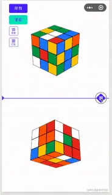
之所以会有这个功能，主要是因为我个人感觉，对于那些空间想象能力强的人来说如果能同时看到六个面，那么在使用时应该是不需要再进行魔方整体转动操作了；
另外两个视角还能扩展为智能教学视图以及操作视图这样就可以新增教学功能了（当然这个功能暂时没有）；
同时出于方便操作的考虑，允许滑动控制两个视图的大小。
示例代码在 Threejs_rubik 项目中；
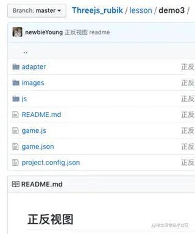
实现
对于这个功能而言需要实现三点：
1. 场景中需要再增加一个魔方；
/* main.js 第78行至第92行 */
initObject() {
//正视角魔方
this.frontRubik = new BasicRubik(this);
this.frontRubik.model(this.frontViewName);
//反视角魔方
this.endRubik = new BasicRubik(this);
this.endRubik.model(this.endViewName);
}
在初始化物体时创建两个简易三阶魔方即可，同时赋予它们不同的名称方便区分；
/* main.js 第18、19行 */
this.frontViewName = 'front-rubik';//正视角魔方名称
this.endViewName = 'end-rubik';//反视角魔方名称
2. 控制魔方所占区域大小
在场景中创建两个魔方后会发现它们重叠在一起了，究其原因在于这两个魔方位置相同，为了解决这个问题需要对它们进行位移变换，改变它们的中心点让它们处于页面上部和页面下部两个不同区域；
另外还要改变它们的大小，防止所占区域变小时显示不全。
进行位移变换时需要注意一个问题，在代码中我们所谓的创建一个魔方，其实只是创建了27 个小方块，然后让它们按某种规律排列而已；
程序中并不存在魔方对象，因此进行位移变换时没办法对魔方对象进行整体的位移变换，只能遍历这 27 个小方块然后对它们分别进行位移变换，这种方式很麻烦，特别是当独立的子元素数量很多的时候。
考虑到这种情况 ThreeJS 框架提供了Group集合对象，当一个物体由很多独立的子元素组成时，可以创建一个集合对象，然后把所有子元素加入到集合对象中；
当需要对物体进行整体位移变换时只需要对集合对象进行位移变换即可。
因此需要修改Rubik对象的model()方法；
/* Rubik.js 第85行至第111行 */
model(type) {
//创建魔方集合
this.group = new THREE.Group();
this.group.childType = type;
this.cubes = SimpleCube(BasicParams.x, BasicParams.y, BasicParams.z, BasicParams.num, BasicParams.len, BasicParams.colors);//生成魔方小正方体
for (var i = 0; i < this.cubes.length; i++) {
var item = this.cubes[i];
/**
* 小方块不再直接加入场景了；
* 而是先加入魔方集合，然后再把魔方集合加入场景。
*/
//this.main.scene.add(item);
this.group.add(item);
}
this.main.scene.add(this.group);
}
new THREE.Group()可以直接创建Group集合对象，加入子元素需要调用其add方法，把所有小方块放入到魔方集合中之后就只需要对this.group进行位移变换就可以了。
当一个魔方占100%页面区域时，它的中心点在原点；那当这个魔方所占页面区域高度p，页面区域总高度为h时，新的中心点在哪呢？
对于这个问题我们可以先画个辅助图：
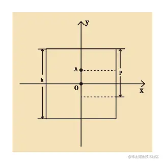
区域总高度为h，上区域高度为p，坐标轴X、Y过原点O，很容易推导出上区域中心点A的Y轴取值为y = h/2-p/2；
当上区域高度p在总高度h中的比例为percent时，也就是说p = h*percent，那么公式可以写成y = h/2 - h*percent/2，进一步简化可以得到y = h(0.5-percent/2)。
根据上述公式可以实现设置魔方区域的函数：
/* Rubik.js 第116行至125行 */
resizeHeight(percent, transformTag) {
if (percent < this.main.minPercent) {
percent = this.main.minPercent;
}
if (percent > (1 - this.main.minPercent)) {
percent = 1 - this.main.minPercent;
}
this.group.scale.set(percent, percent, percent);
this.group.position.y = this.main.originHeight * (0.5 - percent / 2) * transformTag;
}
percent表示魔方所占区域的百分比，transformTag表示中心的变换方向，负号表示向着 Y 轴负方向移动，正号表示向着 Y 轴正方向移动；
minPercent表示魔方所占区域的最小值，因为魔方所占区域的大小会随着滑动条的滑动而变化，滑动条靠近顶部或者底部时，魔方所占区域会很小，以至于看不清而且也无法操作，因此需要设置一个最小值；
/* main.js 第20行 */
this.minPercent = 0.25;//正反视图至少占25%区域
this.group.scale.set(percent, percent, percent)则是对魔方进行缩放从而改变其大小，三个参数分别表示在X轴、Y轴和Z轴的缩放倍数；
对于this.group.position.y = this.main.originHeight * (0.5 - percent / 2) * transformTag除了需要注意transformTag还需要注意originHeight表示的是透视投影相机中原点所在裁切面的高度；
虽然最终效果是为了控制魔方在屏幕上显示时所占区域的大小，但是代码中的originHeight并不能直接使用屏幕高度；
主要是因为屏幕的上的内容都是 3D 场景通过透视投影相机投影之后的效果，originHeight 应该等于魔方上下移动时其中心点所在平面的高度，而初始化魔方时指定其中心点在原点，也就是说originHeight等于过原点且垂直于相机-原点向量的平面的高度；
感觉比较拗口的话，可以看示例图：
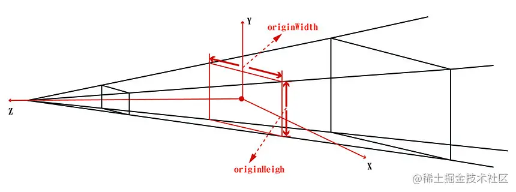
这是透视投影相机的示例图，在ThreeJS基础那一章也出现过，不同的地方在于在过坐标系原点的位置多了一个同时平行于近平面和远平面的裁切面，其高度就是代码中的originHeight，这个裁切面也就是所谓的透视投影相机中原点所在裁切面。
在求透视投影相机中原点所在裁切面的高度之前需要弄清楚一个问题；在ThreeJS基础那一章曾介绍过创建透视投影相机时需要设置视角、近平面距离、远平面距离以及裁切面宽高比四个参数，但是你仔细想过这几个参数是怎么相互配合决定相机的可视区域的吗？
你可能会想当然的觉得视角决定了相机的观察范围（示例图中锥形区域），然后近平面距离和远平面距离则又从该锥形区域中选取一部分，最终确定为可视区域；
如果是这样的话，创建相机时根本就不需要裁切面宽高比这个参数了，因为你已经默认视角既是水平视角又是垂直视角，然后锥形区域裁切面宽高比肯定为 1 且不能改变；
真实的情况是参数中的视角表示的是垂直视角，设置了垂直视角只能决定相机观察区域的的上下范围，上下范围确定之后配合裁切面宽高比才能决定相机观察区域的水平范围。
明确了垂直视角之后就可以求透视投影相机中原点所在裁切面的高度了，如图所示：
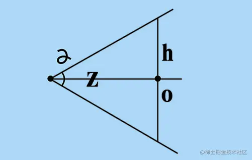
α为创建相机时设定的垂直视角，z表示相机离裁切面的距离，h为裁切面的高度，公式如下：
h = tan(α/2)*z*2
程序中垂直视角为45度，z等于相机的Z轴坐标，Math.tan参数为弧度，最终可得：
/* main.js 第57行 */
this.originHeight = Math.tan(22.5/180*Math.PI)*this.camera.position.z*2;
在实现滑动控制区域大小功能之前，先固定正反视图分别占一半区域；
/* main.js 第82、87行 */
this.frontRubik.resizeHeight(0.5,1);
this.endRubik.resizeHeight(0.5,-1);
此时编译运行即可看到如下效果：
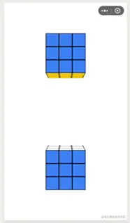
3. 增加控制条；
控制条素材图片如下：
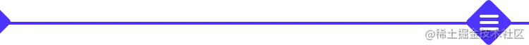
新增images目录用于存放项目中需要用到的图片素材，并在object目录中新增TouchLine.js；
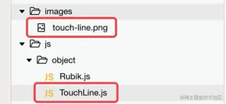
在 3D 场景中绘制 2D 的 UI 元素，目前想到的解决办法是选取 3D 场景中的某个平行于屏幕的平面，然后把 UI 元素绘制到上边去。
因为在控制正反视图所占区域比例时使用的是透视投影相机中原点所在裁切面，因此为了方便计算（因为我们已经求出了该裁切面的宽度和高度了，绘制UI图片时可以直接根据裁切面的尺寸和图片的实际尺寸比较得到缩放比例），控制条也绘制到这个裁切面。
完整实现代码如下：
/* TouchLine.js */
import * as THREE from '../threejs/three.js'
export default class TouchLine {
constructor(main) {
this.main = main;
var self = this;
//实际尺寸
this.realWidth = 750;
this.realHeight = 64;
//逻辑尺寸
this.width = this.main.originWidth;
this.height = this.realHeight * this.width / this.realWidth;
//加载图片
var loader = new THREE.TextureLoader();
loader.load('images/touch-line.png', function (texture) {
var geometry = new THREE.PlaneGeometry(self.width, self.height);
var material = new THREE.MeshBasicMaterial({ map: texture, transparent: true });
self.plane = new THREE.Mesh(geometry, material);
self.plane.position.set(0, 0, 0);
self.main.scene.add(self.plane)
}, function (xhr) {
console.log((xhr.loaded / xhr.total * 100) + '% loaded');
}, function (xhr) {
console.log('An error happened');
});
}
}
3.1 加载素材图片
首先在代码中定义素材图片的实际尺寸；
/* TouchLine.js 第12、13行 */
this.realWidth = 750;
this.realHeight = 64;
然后再定义逻辑尺寸，所谓的逻辑尺寸是指把图片等比例缩放绘制到目标平面后的宽高；
因为要保证图片完全展示，因此逻辑尺寸的宽度肯定等于目标平面的宽度；前边计算过目标平面的高度originHeight，根据透视投影相机中所有裁切面的宽高比不变，在已知高度的情况下，可以求出其宽度；
/* main.js 第57行 */
this.originWidth = this.originHeight * this.camera.aspect;
因为还有其它对象也需要用到originWidth变量，因此把它定义在main.js文件中。
综上所述逻辑尺寸定义如下：
/* TouchLine.js 第16、17行 */
this.width = this.main.originWidth;
this.height = this.realHeight * this.width / this.realWidth;
因为涉及到外部图片素材，因此需要用到 ThreeJS 框架提供的加载器；ThreeJS 框架提供了各种各样的加载器，方便开发者在程序中使用，比如：
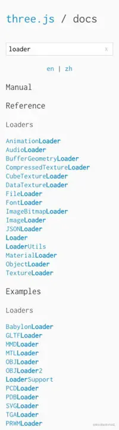
有的用来加载字体，比如FontLoader；有的用来加载音频，比如AudioLoader；有的用来加载 3D 模型，比如OBJLoader；还有的则可以用来加载图片，比如后边会用到的TextureLoader；
使用纹理加载器加载图片的用法很简单，只需先创建，然后执行其load方法即可；
/* TouchLine.js 第28行至第40行 */
var loader = new THREE.TextureLoader();
loader.load('images/touch-line.png', function (texture) {
console.log(texture);
console.log(texture.image);
console.log(texture.image.width+' '+texture.image.height);
}, function (xhr) {
console.log((xhr.loaded / xhr.total * 100) + '% loaded');
}, function (xhr) {
console.log('An error happened');
});
在加载图片时需要先设置图片的路径，然后定义好回调方法；在加载成功的回调函数中可以直接获得由图片生成的纹理对象，图片被保存在纹理对象的image属性中。
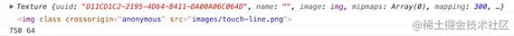
3.2 绘制控制条
在明确了绘制到什么地方以及怎么加载图片素材这两个问题之后，还有一个问题需要解决，用什么绘制？。
比如说要在 3D 场景中绘制一个小方块，可以使用BoxGeometry对象；那现在要在 3D 场景中绘制 2D 的 UI 元素应该用啥呢？
ThreeJS 框架提供了PlaneGeometry对象，用来创建平面，刚好可以用来绘制 2D 的 UI 元素；
/* TouchLine.js 第30行至第34行 */
var geometry = new THREE.PlaneGeometry(self.width, self.height);
var material = new THREE.MeshBasicMaterial({ map: texture, transparent: true });
self.plane = new THREE.Mesh(geometry, material);
self.plane.position.set(0, 0, 0);
self.main.scene.add(self.plane);
在纹理加载器的成功回调函数中，创建好轮廓、纹理、材质之后就可以绘制控制条了，设置好位置，然后把它加入到场景中即可；
在一般情况下 UI 元素不应该受到光照的影响，因此这里使用基础材质对象MeshBasicMaterial。
/* main.js 第4行 */
import TouchLine from 'object/TouchLine.js'
/* main.js 第90行 */
this.touchLine = new TouchLine(this);
最后在main.js中引入并在初始化物体initObject函数中创建TouchLine对象就可以看到如下效果了：
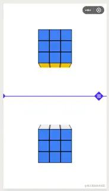
3.3 控制条支持拖拽
目前只是把控制条绘制出来了，并不能用手指拖拽然后控制正反两个视图所占区域的大小，要实现这个功能需要监听触摸事件；
在微信小游戏以及 ThreeJS 框架中并没有像浏览器那样支持对每个元素绑定事件监听，要判断是否在拖拽控制条，只能是获得手指在屏幕上触摸的位置坐标，然后根据坐标计算是否在控制条的范围内，如果在控制条的范围内则认为是在拖拽控制条，如果不在则认为没有拖拽控制条。
要获得手指在屏幕上触摸的坐标位置，需要使用微信小游戏提供的全局触摸事件监听；
/* main.js 第97行至第101行 */
initEvent() {
wx.onTouchStart(this.touchStart.bind(this));
wx.onTouchMove(this.touchMove.bind(this));
wx.onTouchEnd(this.touchEnd.bind(this));
}
onTouchStart表示监听开始触摸事件，onTouchMove表示监听触摸移动事件，onTouchEnd监听触摸结束事件；其回调函数分别为touchStart、touchMove、touchMove。
- 触摸开始回调函数
/* main.js 第106行至第112行 */
touchStart(event){
var touch = event.touches[0];
console.log(touch);
}
在触摸开始回调函数中可以通过event事件对象获得开始触摸点的屏幕坐标，因为不需要考虑多指触控操作，因此以触摸点数组中的第一个元素坐标为准。
获得开始触摸点的屏幕坐标之后，还需要获得控制条的屏幕尺寸才能进行判断；控制条刚好占满屏幕，因此其屏幕宽度等于屏幕的宽度，再然后根据等比缩放的原则可以得到其屏幕高度；
/* TouchLine.js 第20行至第23行 */
this.screenRect = {
width: window.innerWidth,
height: this.realHeight * window.innerWidth / self.realWidth
}
因为控制条默认位置在屏幕中间，已知其屏幕尺寸就可以求出其左上角顶点的屏幕坐标了；
/* TouchLine.js 第24、25行 */
this.screenRect.left = 0;
this.screenRect.top = window.innerHeight / 2 - this.screenRect.height / 2;
为了防止大家混淆，这里再重申下一个 UI 元素涉及的三个尺寸：
实际尺寸：因为这里的 UI 元素完全由图片构成，因此这里的实际尺寸其实就是指图片的实际尺寸；逻辑尺寸：因为需要把 UI 元素绘制到 3D 场景中，因此绘制时需要知道 UI 元素在 3D 场景坐标系中的位置以及尺寸，也就是逻辑尺寸；屏幕尺寸：把 UI 元素绘制到 3D 场景之后会被渲染到屏幕上，此时展现在屏幕中的尺寸就是屏幕尺寸。
在知道控制条屏幕尺寸之后，就可以通过边界判断触摸点是否在控制条范围之内了。
/* TouchLine.js 第82至88行 */
isHover(touch) {
var isHover = false;
if (touch.clientY >= this.screenRect.top && touch.clientY <= this.screenRect.top + this.screenRect.height && touch.clientX >= this.screenRect.left && touch.clientX <= this.screenRect.left + this.screenRect.width) {
isHover = true;
}
return isHover;
}
在触摸开始事件回调中使用startPoint变量记录触摸开始坐标，当触摸开始坐标在控制条范围内时，激活控制条，设置其状态为正在被操控；
/* main.js 第106行至第112行 */
touchStart(event){
var touch = event.touches[0];
this.startPoint = touch;
if (this.touchLine.isHover(touch)) {
this.touchLine.enable();
}
}
之所以需要设置状态，是因为后续还会增加一些 UI 元素，比如打乱按钮、重置按钮、存档按钮、读取按钮等；另外还有魔方整体转动以及操作魔方等都依赖于微信小游戏提供的全局触摸事件监听，为了防止各种操作之间相互干扰，需要在触摸开始事件就决定此次滑动是进行哪种特定的操作。
在TouchLine对象中新增两个方法，并使用isActive表示其是否正在被操控；
/* TouchLine.js 第52行至第58行 */
enable() {
this.isActive = true;
}
disable() {
this.isActive = false;
}
- 触摸移动回调函数
在触摸移动回调函数中需要根据移动后触摸点的新坐标计算控制条的新位置并重新绘制；
/* main.js 第117行至第125行 */
touchMove(event){
var touch = event.touches[0];
if (this.touchLine.isActive) {//滑动touchline
this.touchLine.move(touch.clientY);
var frontPercent = touch.clientY / window.innerHeight;
var endPercent = 1 - frontPercent;
this.rubikResize(frontPercent, endPercent);
}
}
同样是通过事件对象获得移动后触摸点的新坐标，如果控制条状态为已激活状态状态，就更新控制条位置；
/* main.js 第120行 */
this.touchLine.move(touch.clientY);
TouchLine对象的move方法具体实现如下：
/* TouchLine.js 第60行至第77行 */
move(y) {
if (this.isActive) {
if (y < window.innerHeight * this.main.minPercent || y > window.innerHeight * (1 - this.main.minPercent)) {
if (y < window.innerHeight * this.main.minPercent) {
y = window.innerHeight * this.main.minPercent;
} else {
y = window.innerHeight * (1 - this.main.minPercent);
}
}
var len = this.screenRect.top + this.screenRect.height / 2 - y;//屏幕移动距离
var percent = len / window.innerHeight;
var len2 = this.main.originHeight * percent;
this.plane.position.y += len2;
this.screenRect.top = y - this.screenRect.height / 2;
}
}
因为设置了正反视图所占区域的最小比例，因此更新控制条位置时需要根据这个比例计算控制条移动距离的阀值。
/* TouchLine.js 第70、71行 */
var len = this.screenRect.top + this.screenRect.height / 2 - y;//屏幕移动距离
this.screenRect.top = y - this.screenRect.height / 2;
移动后新触摸点即为控制条新的中心点，旧的中心点的纵坐标减去新的中心点的纵坐标即可得到此次控制条移动的距离，此外还得更新控制条左上角顶点的屏幕坐标。
/* TouchLine.js 第73行至75行 */
var percent = len / window.innerHeight;
var len2 = this.main.originHeight * percent;
this.plane.position.y += len2;
因为得到的移动距离是在屏幕上移动的距离，而更新控制条位置时需要更新控制条在 3D 场景中的坐标；可以先求出屏幕移动距离占屏幕总高度的百分比，这个百分比和裁切面移动距离占裁切面总高度的百分比应该是相同的，就可以求出控制条在裁切面的移动距离，然后更新控制条的 Y 轴坐标即可。
/* main.js 第121行至第123行 */
var frontPercent = touch.clientY / window.innerHeight;
var endPercent = 1 - frontPercent;
this.rubikResize(frontPercent, endPercent);
控制条位置更新之后，还需要更新正反视角魔方的位置，先计算新的占比，然后根据新的占比更新位置；
/* main.js 第146行至149行 */
rubikResize(frontPercent, endPercent) {
this.frontRubik.resizeHeight(frontPercent, 1);
this.endRubik.resizeHeight(endPercent, -1);
}
更新位置时只需要调用魔方对象的rubikResize方法即可。
- 触摸结束回调函数
/* main.js 第130至132行 */
touchEnd(){
this.touchLine.disable();
}
在触摸结束回调函数中目前只需要做一件事，把控制条的状态设置为未激活状态，表示此次滑动拖拽结束。
3.4 去掉视角控制器干扰
一切都 OK 了吗？
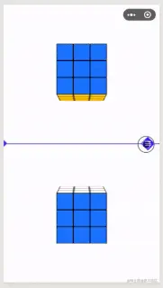
其实并没有，上述绘制 UI 元素的方法存在一个问题，即当相机位置变化时，如果 UI 元素的位置没有跟着变化，就会出现上边那种情况；
解决办法有两个，第一个是 UI 元素的位置随着相机位置的变化而变化，使得 UI 元素始终正面朝向相机；第二个办法是固定相机位置；
这里采用第二个办法，主要原因在于对于魔方小游戏来说，太自由的视角控制反而不好，会让人感觉整个操作过程比较难控制。
固定相机位置需要去掉动态改变其位置的控制器；
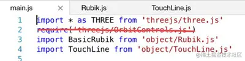
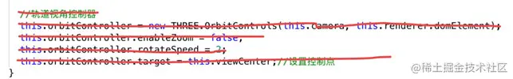
去掉之后就基本正常了。
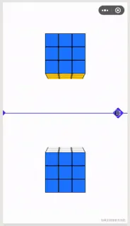
3.5 优化
到此还有最后一个问题需要解决，现在的正反视图只能看到魔方的两个面；
要解决这个问题则需要对魔方再做一些的位移变换，确保正反视角魔方均有三个面可见；
/* Rubik.js 第103行至108行 */
if(type==this.main.frontViewName){
this.group.rotateY(45/180*Math.PI);
}else{
this.group.rotateY((270-45) / 180 * Math.PI);
}
this.group.rotateOnAxis(new THREE.Vector3(1, 0, 1), 25 / 180 * Math.PI);
在 ThreeJS 框架中Object3D对象有很多进行位移变换的函数以及属性；
其中rotateY顾名思义是绕 Y 轴旋转，this.group.rotateY(45/180*Math.PI)表示绕 Y 轴水平转动 45 度，这样就可以看到魔方的两个侧面了；
rotateOnAxis则表示绕某个向量旋转，当魔方需要绕着其对角线转动时，知道其对角线向量为new THREE.Vector3(1, 0, 1)，传入到rotateOnAxis方法中即可；
this.group.rotateOnAxis(new THREE.Vector3(1, 0, 1), 25 / 180 * Math.PI)表示魔方绕着其对角线在垂直方向旋转 25 度，这样就可以看到正视角魔方的上表面和反视视角魔方的下表面了。
最后就实现了如下效果：
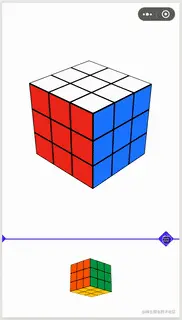
总结
在这一章中我们学会了如何实现魔方小游戏的正反视图功能；在绘制 UI 元素时需要注意尺寸问题，对于图形相关的问题想不明白的时候就画个图试试！